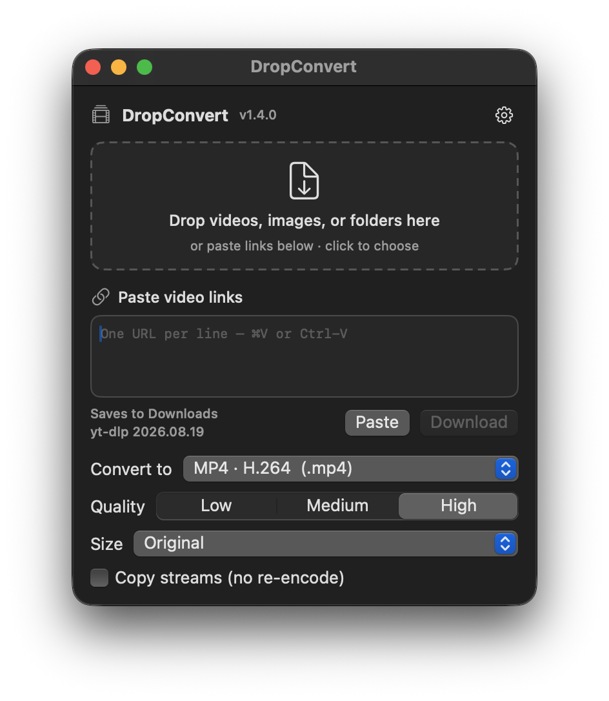
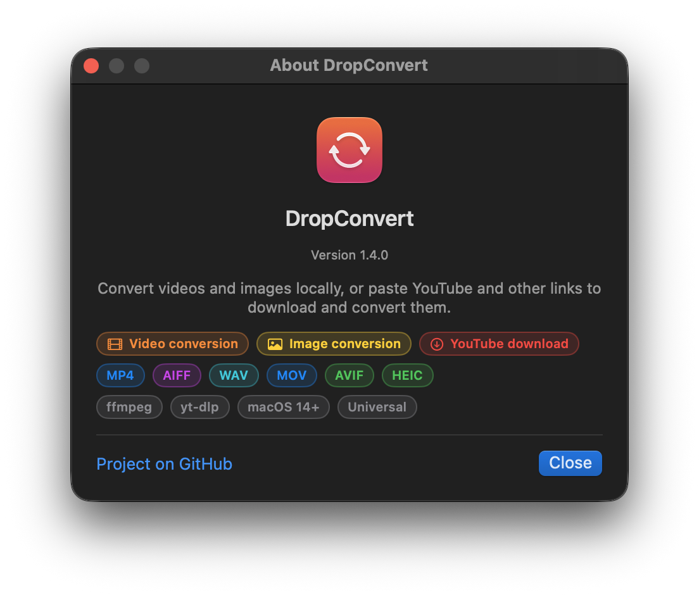

Menu-bar, Dock & Folder Drops
Drop videos, images, audio, or entire folders onto the menu-bar icon or window. Folders expand recursively off the main thread and existing files are never overwritten.
A lightweight macOS menu-bar and Dock app powered by ffmpeg, ImageIO, and yt-dlp. Drop files or folders, or paste YouTube and web video links, and let DropConvert handle codecs, tags, cover art, and subtitles.
brew trust bobclawblaw/tap && brew install --cask bobclawblaw/tap/dropconvert

Everything lives in a compact menu-bar popover — with a full resizable window whenever you want it.
Drop videos, images, audio, or entire folders onto the menu-bar icon or window. Folders expand recursively off the main thread and existing files are never overwritten.
Paste one or dozens of links (including youtu.be, Shorts, live, and YouTube Music). Supports browser cookies, playlists with live item counts, and one-click yt-dlp updates.
Downloaded audio automatically embeds clean title, artist, release year, and center-cropped square cover art for MP3 (ID3v2.3), M4A, AIFF, and FLAC.
Copy streams fails? Re-encodes automatically. VideoToolbox rejects an unusual stream? Falls back to software. Incompatible subtitles or cover art never ruin a conversion.
Writes HEIC and AVIF with macOS ImageIO while preserving EXIF orientation, camera metadata, and Display P3 color. Orientation-aware sizing keeps portrait media crisp.
Run 1, 2, or 4 jobs concurrently, drag to reorder, keep your Mac awake during encodes, survive quits or crashes, see file size savings, and drag finished files straight into other apps.
DropConvert inspects your installed ffmpeg and macOS ImageIO at launch and only lists encoders available on your machine.
Requires macOS 14 Sonoma or later, ffmpeg, and optionally yt-dlp for link downloads.
brew install ffmpeg yt-dlp
brew trust bobclawblaw/tap && brew install --cask bobclawblaw/tap/dropconvert
Or grab the universal DMG and .sha256 checksum from GitHub Releases.
GitHub builds are ad-hoc signed unless a Developer ID certificate is configured. If Gatekeeper blocks launch, open System Settings → Privacy & Security and click Open Anyway.
